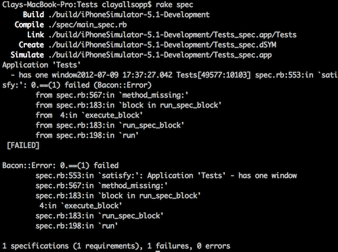
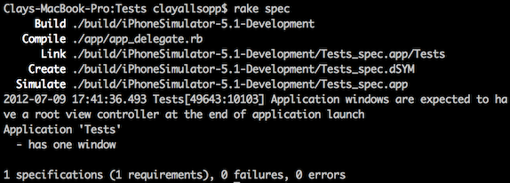

Testing
Everything we've covered so far is pretty common to both Objective-C and Ruby. Sure the syntax may be different, and you can argue the merits of Ruby vs Objective-C all day, but everything covered so far can be done with equal performance using the normal iOS tools. It's time we introduce something unique to RubyMotion.
Automated testing is a very, very cool thing. I won't try to give you the hard sell on it here (there are others much more qualified than I), but I will say that there are very few things more productive you can do when building a software product than writing tests that verify the integrity of your code with absolutely, undeniable certainty (that won't always happen, but it's a nice thought). If something breaks in the future, or if your current you'll know it immediately. How cool is that?
Everyone agrees that testing is a great idea, but when it comes to actually writing tests...most engineers are understandably hesitant. It's not a sexy feature or measurable performance increase, it's future-proofing. Especially on projects that move fast, it's easy to say that tests aren't the most impactful investment of man-hours.
So what do we do? We make tests as easy and seamless to write as possible.
The Ruby community has taken testing to heart and created some very concise testing practices which require very little overhead on the programmer's part. In contrast, the Apple method of automated testing Objective-C iOS apps involves writing JavaScript. There are third party libraries which allow you to write tests in Objective-C, but honestly RubyMotion's test framework blows them out of the water.
Let's take a look at just how easy it is.
Unit Testing
Create a brand new RubyMotion project with motion create Tests and cd into it. Remember way back how we discussed the default folders motion create makes? Well, we're going to take a look at a new one: spec.
RubyMotion loads your tests from the ./spec folder, looking at every single *.rb file. When you create a RubyMotion app, it creates a default test in ./spec/main_spec.rb that looks like this:
describe "Application 'Tests'" do
before do
@app = UIApplication.sharedApplication
end
it "has one window" do
@app.windows.size.should == 1
end
end
Sit there for a moment and read every word of that outloud (or in your head, with a FuNnY vOiCe) like you would a book. See how expressive and simple that is? @app.windows.size.should == 1 does exactly what it sounds like. If .size is not equal to one, then the test fails.
.should works in a similar fashion for any type of object:
@app.nil?.should == false
[1,2,3].should.not == [1,2,3,4]
@model.id.should == example_id
describe and it help structure tests by purpose. You can read the combination of the two like a sentence: "[Test that] Application 'Tests' has one window." A describe block can have many it blocks, and an it block can have many assertions. You can even nest describes if you want!
The last element of the generated test is the before block. The code in a before block runs prior to every sibling test block. It's a good place to reset your objects and restore the state of the item you're testing.
How do we actually use all these fun toys? In your terminal window, run rake spec. This will build your app run the specs against it.
Give rake spec a try and you should see some output like this:

Woops, looks like our application doesn't actually have a window. Let's fix that in our AppDelegate:
class AppDelegate
def application(application, didFinishLaunchingWithOptions:launchOptions)
@window = UIWindow.alloc.initWithFrame(UIScreen.mainScreen.applicationFrame)
@window.makeKeyAndVisible
true
end
end
rake spec and verify that we're in the clear:

In the most literal sense, you've now used automated tests to fix a bug. The first of many such squashes, hopefully!
That's the gist of how testing object properties works. It's very useful for checking if certain things exist or are equal to attributes, but to get those events to trigger we probably have to call a lot of specific, internal functions. For example, if we want to see if a button getting tapped changes an attribute, we have to manually invoke the button's callback. If only there were a better way...
Functional Testing
And in fact, there is. RubyMotion also has great support for "functional" tests, where we trigger UI events like taps and swipes and examine their side effects. Instead of doing something like button.callback.call, we can do the equivalent of tap button. Neat, right?
These functional tests are great, but are intended to test just one UIViewController a piece, so no pushing or popping new controllers.
To get this to work, we first need a new UIViewController subclass. Create ./app/ButtonController.rb and fill it out with a button and callback:
class ButtonController < UIViewController
def viewDidLoad
super
@button = UIButton.buttonWithType(UIButtonTypeRoundedRect)
@button.setTitle("Test me title!", forState:UIControlStateNormal)
@button.accessibilityLabel = "Test me!"
@button.sizeToFit
self.view.addSubview(@button)
@button.addTarget(self, action:'tapped', forControlEvents:UIControlEventTouchUpInside)
end
def tapped
p "I'm tapped!"
@was_tapped = true
end
end
Pretty normal UIButton pattern, except one new thing: accessibilityLabel.
accessibilityLabel is a string property available for every UIView. It's used by the operating system as the audible text to read aloud when someone uses the device's VoiceOver functionality (so don't fill it with garbage). Why are we introducing this now? Because RubyMotion's functional tests look up views by their accessibilityLabel, which ensures that views you're testing have been added to the hierarchy and don't just exist somewhere in memory.
Finally we need to actually hook this controller up to our window in AppDelegate:
def application(application, didFinishLaunchingWithOptions:launchOptions)
@window = UIWindow.alloc.initWithFrame(UIScreen.mainScreen.applicationFrame)
@window.makeKeyAndVisible
@view_controller = ButtonController.alloc.initWithNibName(nil, bundle:nil)
@window.rootViewController = @view_controller
true
end
You can rake and confirm that "I'm tapped!" appears in the terminal upon tapping the button. But hey, let's write a test so we know that the variable really does get set!
In main_spec.rb, add a new describe block somewhere:
describe "button controller" do
tests ButtonController
it "changes instance variable when button is tapped" do
tap 'Test me!'
controller.instance_variable_get("@was_tapped").should == true
end
end
Nice, looks like we've got some new toys to play with.
tests <class> links our describe to a specific UIViewController class. It does something really neat: it will instanstiate the tested controller with a new UIWindow. We can access the window and controller inside the tests with self.window and self.controller, respectively. This ensures that there's no junk UI or state lying around which could corrupt our procedures.
So we set the spec to test our controller and start our assertions in the it block. Our other new toy is tap. tap will take as its first argument either a raw UIView or an accessibility label. By default, UIButtons and UILabels will use their title as the accessibility label; we overrode that in our implementation to explicitly show how we can access most other views in tests.
In addition to tap we can also use flick, drag, pinch_close, pinch_open, and rotate. Check out RubyMotion's full documentation for the details on each.
rake spec and confirm that this actually works:
2 specifications (2 requirements), 0 failures, 0 errors
Wrapping Up
We can effortlessly write tests with RubyMotion. If you weren't testing your projects before, there's no reason not to start now.
What did we learn about testing today?
- RubyMotion loads your tests from the
./specdirectory. - Tests are collections of
describeanditblocks. These both take a label argument which helps group alike tests. - Use
<any object>.shouldto assert equality. Example:greeting.should == "hello" UIViewControllers have functional tests, which let us simulate events liketapandpinch. In yourdescribeblock, use thetests <controller class>function to enable these features.tap <accessibility label>programmatically taps the view with itsaccessibilityLabelproperty set to the argument.
Qwop over to the next chapter to see how to run HTTP requests!